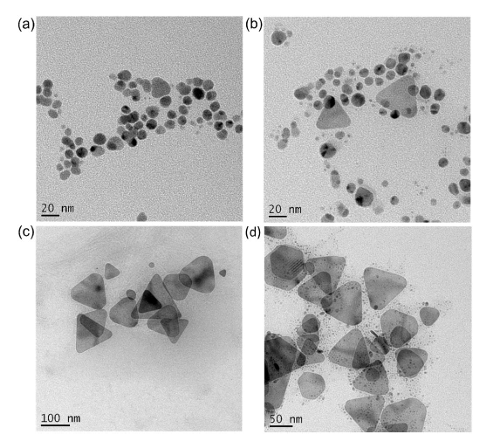
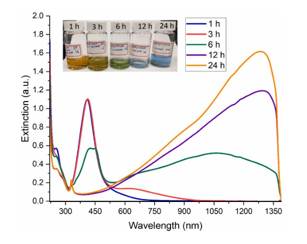

Photochemistry • Nanomaterials • Plasmonics
Development of a simple one-pot UVC photochemical method for producing triangular silver nanoprisms with tunable dimensions and strong near-infrared plasmonic absorption.

I developed a one-pot photochemical method for synthesizing triangular silver nanoprisms using 254 nm UVC irradiation.
Silver nitrate was used as the silver precursor, while citrate functioned as both a photoreducing and stabilizing agent. The method enabled the formation of anisotropic silver nanostructures without requiring pre-synthesized silver seed particles or strong chemical reducing agents.

UV–Vis–NIR spectroscopy was used to monitor the evolution of the plasmonic response during UVC irradiation.
As the reaction progressed, the optical response evolved from the visible region toward a broad near-infrared absorption band, consistent with the formation and growth of anisotropic silver nanoprisms.
Under optimized conditions, the plasmonic absorption extended beyond 1200 nm.